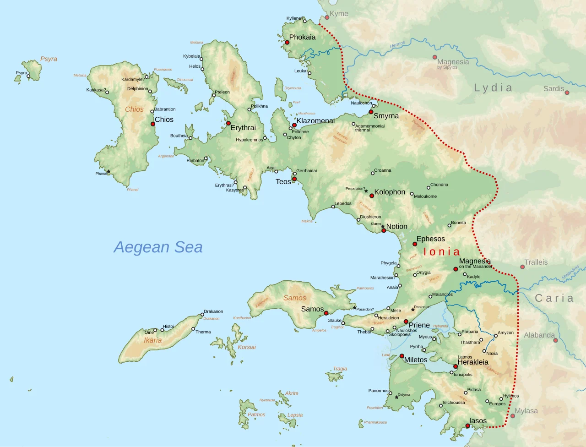

Felsefenin bir sabah aniden, tek bir kişinin zihninde “icat edildiği” bir an yok. Bildiğimiz, MÖ 6. yüzyılın başlarında Batı Anadolu’daki İyonya’da, özellikle Miletos’ta, bazı düşünürlerin doğayı açıklamak için gözleme, akıl yürütmeye ve genel ilkelere başvurduğu. Onları önemli yapan yalnızca verdikleri cevaplar değildi; doğa hakkında başkalarının da sınayabileceği, tartışabileceği sorular sormalarıydı.
“İlk filozoflar” nerede ortaya çıktı?
Antik Yunan dünyasının doğu kıyısında, bugünkü Türkiye’nin batısında yer alan İyonya; liman kentleri, deniz ticareti ve farklı halklarla temasın kesiştiği bir bölgeydi. Miletos da Ege ve Doğu Akdeniz’e açılan önemli bir limandı. Aşağıdaki harita, Miletos’u ve çevredeki İyonya kentlerini gösteriyor.

Bu coğrafi bağlam, tek başına felsefeyi açıklamaz; ama farklı geleneklerden bilgi ve öykülerin dolaşabildiği bir ortam yaratmış olabilir. Yunan astronomisi ve matematiğinin Babil ve Mısır’daki daha eski bilgi birikimleriyle karşılaşmış olması güçlü bir araştırma konusudur. Bu yüzden ilk düşünürleri “bütün bilgiyi sıfırdan bulan yalnız dahiler” gibi göstermek doğru olmaz. Aktarımın hangi fikirde, kimler üzerinden ve ne ölçüde gerçekleştiği ise her zaman kesin olarak bilinmiyor.
Burada önemli bir sınır da var: “İlk filozoflar” ifadesi genellikle Batı felsefe geleneğinin başlangıcını anlatır. İnsanlar dünyanın kökenini, adaleti ve iyi yaşamı Yunan düşünürlerinden çok önce de sorguluyordu; Mezopotamya, Mısır, Hindistan ve Çin’in kendilerine özgü bilgelik ve düşünce gelenekleri vardı. Dolayısıyla bu, felsefenin dünyada ilk kez yalnızca İyonya’da başladığı iddiası değil.
Mitostan logosa: bir gecede gerçekleşmeyen dönüşüm
Erken düşünürlerden önce Homeros ve Hesiodos gibi ozanlar, evrenin doğuşunu ve düzenini tanrıların soyları, çatışmaları ve eylemleri üzerinden anlatıyordu. İyonya düşünürleri doğa olaylarının kendi içindeki nedenlerini aramaya yöneldi: Evren hangi ilkeden oluşur? Değişen şeylerin altında değişmeyen bir düzen var mı? Gök cisimleri nasıl hareket ediyor?
Bu geçişi “mit bir gün bitti, bilim ertesi gün başladı” diye keskinleştirmek yanıltıcıdır. Eski dinsel fikirler ve yeni doğa açıklamaları bir süre yan yana yaşadı. Erken Yunan filozoflarının bir kısmı tanrıları bütünüyle reddetmedi; ancak doğayı anlamak için her olayı bir tanrının özel müdahalesine bağlamak yerine genel bir düzen aradı. Tarihçilerin “mitostan logosa geçiş” dediği şey, bir kopuştan çok, açıklama biçimlerinin yavaşça çeşitlenmesiydi.
Miletos üçlüsü: su, sınırsız olan ve hava
Thales: her şeyin başlangıcı su mu?
Thales (yaklaşık MÖ 624–546), çoğu anlatıda Batı felsefesinin ilk düşünürü olarak anılır. Ona atfedilen temel soru, bütün varlıkların gerisinde ortak bir başlangıç ya da arkhe bulunup bulunmadığıydı. Aristoteles’in yüzyıllar sonra aktardığına göre Thales, bu ilkenin su olduğunu düşünüyordu. Bu görüşü bugün bilimsel olarak kabul etmiyoruz; tarihsel önemi, doğanın çeşitliliğini tek bir doğal ilkeyle açıklama arayışında yatıyor.
Thales’in güneş tutulmasını önceden bildiği, geometriyi Mısır’dan öğrendiği veya siyasi öğütler verdiği gibi hikâyeler de antik kaynaklarda yer alır. Bunlar onun pratik ve kuramsal bilgeliğine ilişkin sonraki anlatılardır; her birini doğrulanmış biyografik olay gibi sunamayız. Thales’in kendi eseri günümüze ulaşmadığından, düşüncelerini çoğunlukla daha sonraki yazarların aktarımlarından tanıyoruz.
Anaksimandros: başlangıç belirli bir madde değilse?
Thales’ten sonraki kuşaktan Anaksimandros (yaklaşık MÖ 610–546), ilk ilkenin bildiğimiz dört unsurdan biri olmadığını savundu. Bu kaynağa apeiron — sınırsız, belirsiz ya da sınırı olmayan — adını verdiği aktarılır. Böylece belirli şeylerin, kendileri gibi belirli olmayan bir kökenden nasıl ortaya çıktığını açıklamaya çalıştı. Ona ayrıca yeryüzü ve gök hakkında modeller, harita yapımı ve gökbilimsel açıklamalar atfedilir; bunların ayrıntıları da parçalı ve geç dönem tanıklıklarına dayanır.
Anaksimenes: hava nasıl başka şeylere dönüşür?
Anaksimenes (yaklaşık MÖ 6. yüzyıl), ilk ilke olarak havayı seçti. Seyrekleşme ve yoğunlaşma yoluyla havanın ateş, rüzgâr, bulut, su ve toprağa dönüştüğünü düşündüğü anlatılır. Bugün bu fizik modeli geçerli değil; fakat değişimin nasıl ve hangi mekanizmayla gerçekleştiğini açıklama çabası önemlidir. Bir maddeyi adlandırmanın ötesinde, dönüşüm sürecine dair bir açıklama öneriyordu.
İyonya’nın ötesi: sayı, değişim ve varlık
Pythagoras ve sayıların düzeni
Samoslu Pythagoras (yaklaşık MÖ 6. yüzyıl), güney İtalya’daki Kroton’da etkili bir topluluk kurdu. Pythagorasçı çevre matematik, müzikteki oranlar, ruh ve yaşam biçimiyle ilgileniyordu. Ancak Pythagoras’ın kendisine ait güvenilir, eksiksiz bir metin yoktur; sonraki yüzyıllarda takipçilerinin öğretileri de kurucuya mal edilmiştir. Bu nedenle “Pythagoras şunu keşfetti” diye anlatılan bazı bulguların kime ait olduğunu kesinleştirmek zordur.
Herakleitos: değişimin içinde bir düzen olabilir mi?
Ephesoslu Herakleitos (yaklaşık MÖ 6. yüzyılın sonu–5. yüzyılın başı), dünyayı sürekli dönüşüm ve karşıtlıklar içinden düşünür. Ona göre karşıt görünen süreçler — gece ve gündüz, yaşam ve ölüm — bir düzenin parçalarıdır. Bu düzeni logos kavramıyla ifade eder; burada sözcüğü yalnızca “söz” değil, ortak ve anlaşılabilir bir düzen ya da açıklama olarak düşünmek gerekir. Herakleitos’un kısa, yoğun ve bilerek zorlayıcı parçaları, yorumcular arasında yüzyıllardır tartışma yaratıyor.
Parmenides ve Zenon: duyularımıza ne kadar güvenebiliriz?
İtalya’daki Elea kentinden Parmenides, değişim ve hareket hakkında duyularımızın anlattığıyla akıl yürütmenin ulaştığı sonuçlar arasında gerilim gördü. Şiir biçimindeki eserinde “var olan” üzerine düşünür; duyusal dünyanın değişkenliğini sorgular. Öğrencisi sayılan Zenon ise hareket ve çokluk fikrinin güçlüklerini görünür kılmak için, sonradan paradoks diye anılan düşünce deneyleri geliştirdi. Bunlar basit bilmeceler değil, bir varsayımı kabul ettiğimizde hangi sonuçlara sürüklendiğimizi test eden argümanlardı.
İlk filozoflar ne araştırıyordu?
“Araştırma” sözcüğünü bugünkü laboratuvar, üniversite ve hakemli dergi düzeniyle karıştırmamak gerekir. Bu düşünürler sistematik deney protokolleri yürütmüyordu. Gözlem yapıyor, gökyüzü ve doğa olayları üzerine akıl yürütüyor, geometri ve ölçümle ilgileniyor, şiir ya da düzyazıyla fikirlerini aktarıyor, başkalarının açıklamalarına itiraz ediyorlardı. Bazıları seyahat ediyor veya şiirlerini topluluk önünde okuyordu; Pythagorasçı çevre gibi topluluklarda ise düşünce belirli bir yaşam disipliniyle birlikte ele alınıyordu.
Bu faaliyetleri bilime giden yolların bir bölümü olarak görebiliriz; ama onları modern bilim insanları gibi tanıtmak anakronizm olur. Gözlem ile mit, matematik ile din, akıl yürütme ile şiir henüz kesin sınırlara ayrılmamıştı.
Şüphe nerede başlıyor?
Erken felsefeyi yalnızca kesin cevapların doğuşu olarak anlatmak eksik kalır. Xenophanes (yaklaşık MÖ 570–478), insanların tanrıları kendi görünüşlerine benzettiğini eleştirdi: farklı halkların tanrıları da kendilerine benziyorsa, tanrı tasvirleri hakkında ne kadar emin olabiliriz? Ona atfedilen bir başka önemli düşünce, insanlar doğruyu bulsalar bile bunu kesin olarak bildiklerini her zaman ayırt edemeyebilecekleridir. Xenophanes bütün bilgiyi reddeden bir kuşkucu değildi; bilgi iddialarına karşı tevazu ve eleştirel dikkat çağrısı yapıyordu.
Beşinci yüzyılda yaşayan Protagoras’a atfedilen “İnsan her şeyin ölçüsüdür” düşüncesi, bilginin ve değerlendirmenin insana göre değişebileceği sorusunu gündeme getirdi. Tanrılar konusunda ise insan ömrünün kısalığını ve konunun belirsizliğini gerekçe göstererek kesin bir yargıya varamadığını söyleyen bir tutum ona atfedilir. Bunlar daha sonraki kaynaklardan bilindiği için, sözlerin tam bağlamı ve anlamı üzerine tartışmalar sürer.
Bu ilk kuşkular, yüzyıllar sonra sistemli bir düşünce okuluna dönüşecek Antik kuşkuculukla aynı şey değildir. Yine de “Neyi biliyorum?”, “Duyularım yanılabilir mi?” ve “Bir iddia için yeterli gerekçem var mı?” sorularını felsefenin merkezine taşımaya yardım ettiler.
Bu düşünürlerden geriye ne kaldı?
Thales’ten, Anaksimandros’tan ya da Herakleitos’tan bize tam bir kitap ulaşmadı. Bildiklerimizin çoğu, Platon ve Aristoteles gibi daha sonraki düşünürlerin yorumlarından, alıntılardan ve yüzyıllar sonra hazırlanmış derlemelerden geliyor. Bu yazarların kendi felsefi amaçları vardı; öncekileri kendi sorularına göre seçip açıklamış olabilirler. Bir düşünürün ağzından aktarılan kısa bir cümle bile, bağlamından kopmuş ya da aktarım sırasında değişmiş olabilir.
Bu yüzden erken filozofların fikirlerini tek, kesin bir öğreti gibi değil, kanıtı sınırlı tarihsel rekonstrüksiyonlar olarak okumalıyız. İsimler ve tarihler yaklaşık; bazı biyografiler efsaneyle iç içe; “ilk” unvanı ise geriye dönük bir sınıflandırmadır. Belki de bu belirsizlik, onların mirasına uygundur: Dünya hakkında düşünmek, yalnızca cevap üretmek değil, cevabımızın dayanaklarını da sorgulamaktır.
Kaynaklar ve görseller
- Andrea Falcon, “Presocratic Philosophy,” Stanford Encyclopedia of Philosophy. Erken düşünürlerin kaynakları, İyonya çevresi, doğa açıklamaları ve sonraki aktarımların sınırları. SEP maddesi.
- “Presocratics,” Internet Encyclopedia of Philosophy. Miletos düşünürleri, Thales, Anaksimandros, Anaksimenes ve erken kaynakların eleştirel değerlendirmesi. IEP maddesi.
- “Xenophanes,” Stanford Encyclopedia of Philosophy. Xenophanes’in tanrı tasvirlerine eleştirisi, şiirleri ve bilgi üzerine düşünceleri. SEP maddesi.
- “Xenophanes,” Internet Encyclopedia of Philosophy. Doğa açıklamaları ve insan bilgisinin sınırlarına dair bir değerlendirme. IEP maddesi.
- Miletos antik tiyatrosu fotoğrafı: Bernard Gagnon / Wikimedia Commons, CC BY-SA 3.0 kaynak kaydı. Antik İyonya haritası: Tomisti / Wikimedia Commons, CC BY-SA 4.0 kaynak kaydı. Görseller filozofların portreleri değil, Miletos’un arkeolojik alanı ve bölgenin haritasıdır.